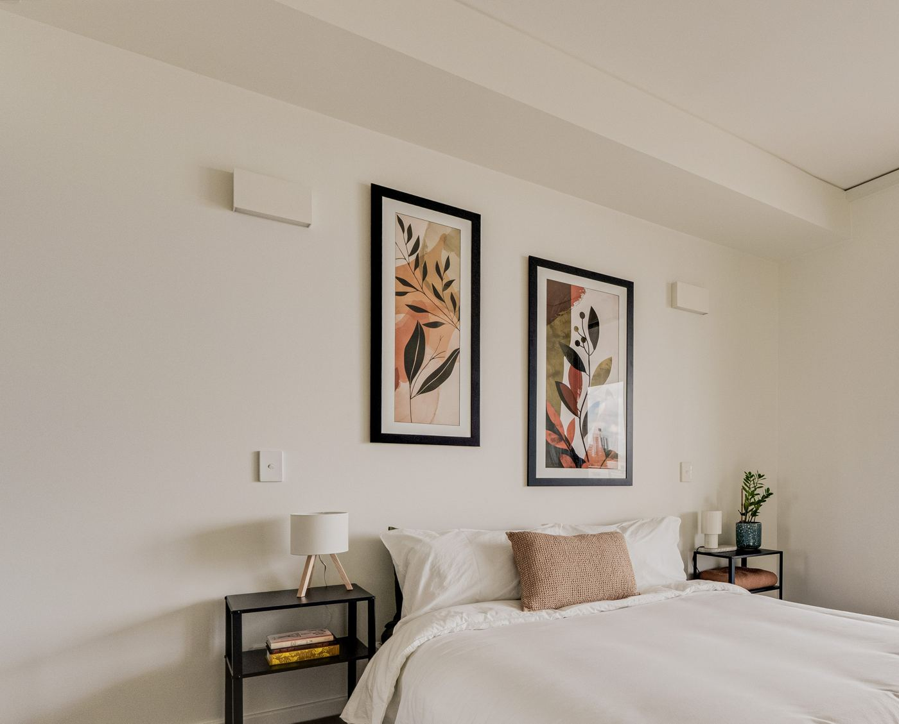
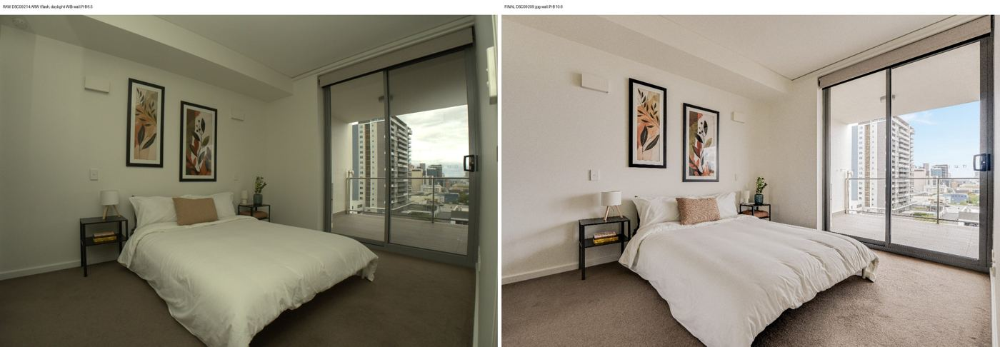
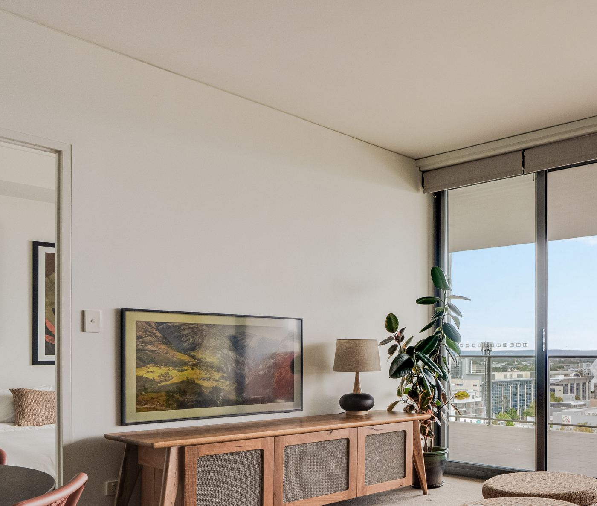
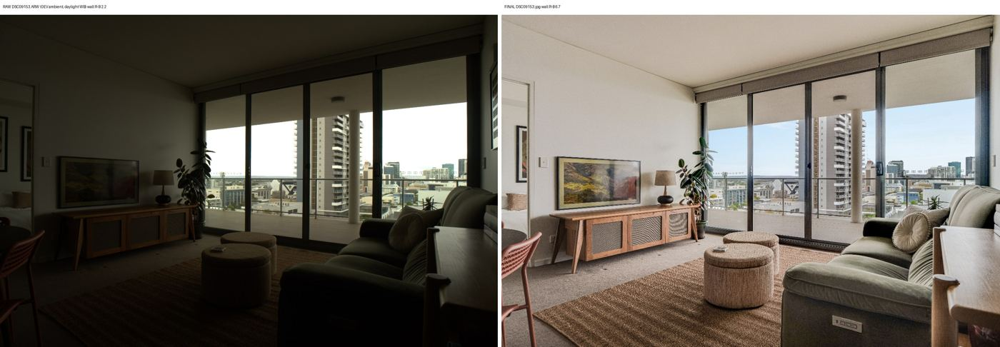

Please: re-edit each photo below and re-upload to the same Finals folder with the same file name. Target look: NATURAL and true to the raw – same wall, tile and floor colour as the raw (no extra warmth, saturation or cream), no extra sharpening, clarity or texture, not over-bright or hazy, blacks deep but not crushed, windows pulled with a clear view, straight verticals, pale soft blue skies, same brightness room to room.
79/1178 Hay Street, West Perth
FIX · 8.8/10
Megan Topham · Shooter: Yanhua chai · Finals/Megan Topham/79-1178 Hay Street, West Perth, Western Australia 6005, AU/Sales Photography
DSC09209Remove the cream cast - walls white like the raw
Bedroom walls are noticeably creamier than the raw (wall R-B +10.6 vs +6.5 in the same-room flash frame). The same warm shift runs through most interiors (bedrooms, bathrooms, laundry) - please neutralise the set to match the raws.

Delivered edit

Same-room raw flash frame (left) vs delivered (right)
DSC09153Cool the walls back to true off-white
Living room walls read beige; the raw shows near-neutral white walls (wall R-B +6.7 vs +2.2 in the raw). Keep the timber and rug as they are.

Delivered edit

Same-room raw 0EV frame (left) vs delivered (right)
Done well: Clean window pulls with clear city views; Straight verticals throughout; Bright, pale-blue skies on the building exteriors; Good contrast with deep blacks on cabinets